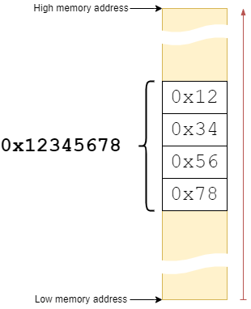
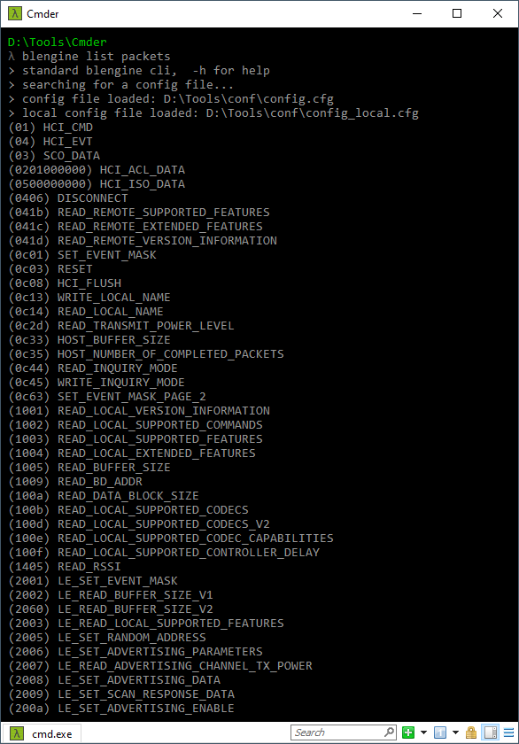
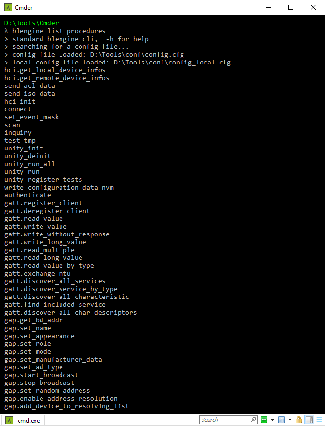

How to use the BLEngine as a Command Line Tool or from a Python script.
CLI Usage and options
Don’t forget to read the Getting Started Page to know how to call blengine from the Command Line.
You can add support of the options below in your script by importing blengine.enable_cli_args then add args = blengine.enable_cli_arg() at the beginning of your code, to have access to the following.
Help
-h or --help will show command help if you are lost.
Add this option after any command to have further information like in the following example with the command run:
python blengine_cli run --help
> standard blengine cli, -h for help
usage: blengine run [-h] [--model DEVICE_MODEL] name ...
positional arguments:
name procedure name
args Procedure arguments as described by the procedure <help> command
optional arguments:
-h, --help show this help message and exit
--model DEVICE_MODEL device model (example: em9305)
Shortcut
To quickly send a command or execute a procedure, you can use the --port option which will create a default device connected the serial port provided with default parameters (EM9305@115200 bauds)
Quickly send an HCI Reset
blengine --port COM22 send Reset
Configuration file
To load a specific configuration, use the --config <config_file> option. The <config_file> might contain an absolute or a relative path.
If available in the specified folder, a config_local.cfg will will also be loaded and used.
Debugging
It can sometimes be useful to get more details on the current operation. This can be achieved by specifying the --debug option to enable the very verbose debug mode, including RX/TX raw data output.
python blengine_cli.py --port COMxx --debug <command> ...
Blengine Commands
Hint: Use -hor --help after the command to get more help !
Send a packet
The send command takes the packet name as the first argument and the packet argument in the --<NAME>=<VALUE> form. It serializes the provided parameters into a packet that will contain the command operational code (opcode) followed by the parameters value.
As an example, the esmm_write_at_address command takes two parameters. The parameter --start_address=… is used to specified a memory address in which a data will be written, like 0x801000 for example which is a location in RAM. The parameter --data=… is used to specify a data which can either be a byte, a 16 bits word or a 32 bits word.
Since the 9305 ARC CPU implementation is little endian, the least significant byte of a word is stored first in memory, and the most significant byte is stored last at a higher address.
The figure below shows how a 32 bits (or 4 bytes word) is stored in memory by the CPU:

Most of the time, there is no need for a user to bother with endianness. Any hexadecimal or binary value is written in a natural way like in the following example:
blengine --port=COM22 send emsmm_write_at_address --start_address=0x801000 --data=0x12345678
This command will end up in sending the following serialized data:
0103fd080010800078563412
As it can be seen here, the least significant byte (0x78) is sent first, and the most significant byte (0x12) is sent last. And such word is stored in RAM memory at address 0x801000 in the way represented by the above picture.
However, in case a fine tuning over the values is needed, this order can be changed by following the rules below:
prefixed with
0x: (lowercasex) interpreted as hexadecimal (0x12345678->0x12345678).prefixed with
0X: (uppercaseX) interpreted as hexadecimal and invert the bytes order (0X12345678->0x78563412)prefixed with
0b: (lowercaseb) interpreted as binary LSB First value.0b00001111->0x0Fprefixed with
0B: (uppercaseB) interpreted as binary MSB First value.0B00001111->0xF0prefixed with
0d: interpreted as integer value.
Here is an example in which the bytes of the data are inverted:
blengine --port=COM22 send emsmm_write_at_address --start_address=0x801000 --data=0X12345678
This command will invert the data word. Consequently, the sent packet will be:
0103fd080010800012345678
In this example, the most significant byte (0x12) is transmitted first and the least significant byte (0x78) is tranmitted last.
Beyond specifying a binary or an hexadecimal value, it is possible to provide the data to be written through an array of bytes written in Python syntax as shown in the following example:
blengine --port=COM22 send emsmm_write_at_address --start_address=0x801000 --data="int.from_bytes(bytearray([ 0x00, 0x00, 0x00, 0x03 ]), 'little')" --data_length=4
The serialized sent packet will be the following: 0103fd080010800012345678. Note the keyword little to instruct the Python interpreter how to order the bytes passed within the array (little endian in this case).
This keyword can be replaced by big and then the bytes order will be big endian. In such a case, the sent serialized packet will be: 0103fd080010800078563412.
Error management
BLEngine is able to detect many errors and to inform the user of such error along with relevant information for figuring out what is wrong with a command or a procedure.
Where some commands have mandatory arguments, an error will be raised in case such type of argument is missing. This will not be the case for optional argument since they have a default value that can be used.
In case a parameter name or a command name is mispelled, BLEngine will list commands with very similar names to help the user find the exact command needed.
Run a specific procedure
The run procedure will execute a predefined procedure.
Since every procedure can define its own sub-parser for the command line options, please refer to the procedure usage for details. The parsing of the argument values goes through the standard parser and is not processed like for sending a packet.
Below is an example for programming a device with a one-liner.
> blengine --port=COM22 run emsystem_prog --help
usage: emsystem_prog Func [-h] [--directory DIRECTORY] [--address ADDRESS] [--version_check VERSION_CHECK] [--spi_disable] [--return_address] [--progress]
files [files ...]
positional arguments:
files hex file(s)
options:
-h, --help show this help message and exit
--directory DIRECTORY
The directory where the files are located
--address ADDRESS Memory Address 0xXX..
--version_check VERSION_CHECK
Check that the indicated version is the same as the current version of the device. If it is the same version, it is not programmed again. If the
device does not have a version or the version is different, the device is programmed with the version indicated
--spi_disable Disable SPI configure mode
--return_address Read the Bluetooth address of the device before programming. The value is stored in the engine parameter local_address
--progress Show Progress
Configuration helper
BLEngine comes with a default configuration living inside the installation or package folder. To customize this configuration to be suitable for your needs, blengine provide a config command which will create the files needed. The following command will create configuration files in your current working directory.
> blengine config --init
Copying C:\Users\cborel\AppData\BLEngine\config to current working dir (C:\Users\cborel\Documents\EMToolkit\BLEngine)
C:\Users\cborel\Documents\EMToolkit\BLEngine\config.cfg
C:\Users\cborel\Documents\EMToolkit\BLEngine\nvm_infos\EM9305\configurations.json
C:\Users\cborel\Documents\EMToolkit\BLEngine\nvm_infos\EM9305\nvm_default_data.json
C:\Users\cborel\Documents\EMToolkit\BLEngine\nvm_infos\EM9305\nvm_descriptions.json
C:\Users\cborel\Documents\EMToolkit\BLEngine\nvm_infos\EM9305\registers.json
> creating local config file C:\Users\cborel\Documents\EMToolkit\BLEngine\config_local.cfg for versioning convenience
The --show option will dump the current configuration as it is parsed (without nvm informations)
The --nvm_infos will dump the nvm informations that has been loaded from json files
Search or list available procedure and packets
If you don’t know the name of the packet or the name of the procedure you want to execute, you can search for it with the search command.
> blengine search Address
searching for Address
procedures found:
set_private_address
packets found:
0x2005 LE_Set_Random_Address
0x202b LE_Read_Peer_Resolvable_Address
0x202c LE_Read_Local_Resolvable_Address
0x202d LE_Set_Address_Resolution_Enable
0x202e LE_Set_Resolvable_Private_Address_Timeout
0x2035 LE_Set_Advertising_Set_Random_Address
0xfc02 EM9304_SetPublicAddress
0xfc20 EM9304_Read_At_Address
....
If you want to list all the packets and procedures available, you can use the list command followed by the type of item you would like to list.
For example, to list all packets, type the following command:
> blengine list packets
The output should look like this:

The above screenshot only shows few packets since the complete list is quite long!
To list all available procedures, the following command can be used:
> blengine list procedures
It should end-up with the following output:

REPL Mode (beta)
BLEngine provide a REPL (Read-Eval-Print-Loop) Mode which enable a command-line-like interaction.
> blengine repl
BLEngine on git feature/13702 (v1.3.1-119-g841a4c1) by EM Microelectronic - Marin
Loaded 647 packets and 59 procedures
Welcome to BLEngine REPL (beta), 'exit' or ctrl-c to quit.
> REPLEngine started on COM7
REPLEngine>
Once inside the “loop” you can use it as a regular CLI interface where there are some extra commands available:
exit or ctrl-c will qui the REPL mode
start start the engine (start serial connection)
stop the engine (close serial connection)
Python Module Usage
From a Python script or under the Python interpreter, BLEngine can be used by issuing the following statement:
import blengine
This is actually made possible in case the BLEngine package has previously been installed like any other Python package using the pip installation tool.
Note that a python virtual enivronment might use its own variables set, specifically for PYTHONPATH and PATH variables which might be different that the systemwide Python installation.
API Examples
The .\blengine\examples folder contains some useful examples to get started on how to integrate BLEngine inside a Python script.
In particular, the following statement shall be found at the beginning of the script depending on which part of BLEngine needs to be used.
from blengine.core import logger
from blengine.core.config import load, config
from blengine.core.transport import serial_from_config
from blengine.hci.engine import HciEngine
from blengine.hci.packets import hci
from blengine import enable_cli_args
Most of the examples need a configuration file located in the same directory than the example folder. However, options in this file can be passed to the cli as arguments if you want to manually provide the configuration file yourself.
Running the example scripts can be done like shown below:
# launch the helloReset example
python -m examples.basics.helloReset
You are encouraged to dive into these example scripts to get a deep knowledge on how such script can be written.